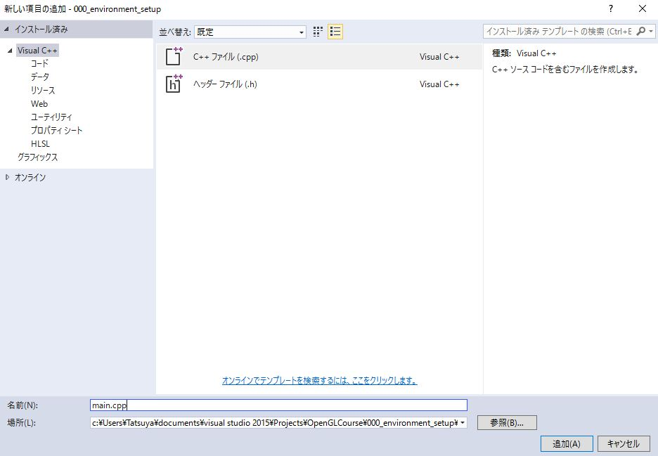

第0回 環境設定¶
このコースではOpenGLを利用するためにGLFW(OpenGL Frameworkの略)というライブラリを使用します。 以下では、WindowsとMacOSでの開発環境の設定方法についてご紹介します。
Windowsの場合¶
Visual Stuidoのインストール¶
Windowsの場合にはVisual Studioを使うことをお勧めします。 Visual Studioは現在Community版が無料で使用可能なので、そちらを利用します。
こちらからファイルをダウンロード後、インストーラを実行します。 注意点として、開発に用いるプログラミング言語であるC++は、現在の初期設定では 使用できないようになっているので、必要なコンポーネントでVisual C++にチェックを入れます。
GLFWのインストール¶
GLFWの公式ページからコンパイル済みのライブラリをダウンロードします。
上記のウェブページを開いて、中央にある「Windows pre-compiled binaries」から、 ライブラリをダウンロードします。こちらには32bitのものと64bitのものがありますが、 現在のコンピュータであれば、おおよそ64bitのものをダウンロードすれば大丈夫だと思います。
ダウンロードが完了したら、これを適当なディレクトリに配置します。標準的には、 C:Librariesopengl のようなディレクトリを作成して、その中に置くのが良いかと思います。
Visual Studioプロジェクトの作成¶
ここまで設定が完了したら、実際にVisual Studioでサンプルプログラムをビルドします。 まずVisual Studioを開いて「スタートページ」から「新しいプロジェクト...」をクリックします。
そこで「空のプロジェクト」を選択し、プロジェクト名、およびソリューション名を入力します。 ここでプロジェクト名を入力するとソリューション名も、それに合わせて変更されますが、 これらは必ずしも同じである必要はありません。
今後もこのソリューションを使うことを考えて、プロジェクト名は「000_environment_setup」、 ソリューション名は「OpenGLCourse」などにしておくと良いかと思います。

GLFWを使うためのプロジェクト設定¶
GLFWを使用するためには、プロジェクトの設定をする必要があります。設定する箇所は3か所です。
まず「ソリューションエクスプローラー」からプロジェクト名「000_environment_setup」を右クリックし、 一番下にある「プロパティ」を選びます。そうすると「000_environment_setupのプロパティページ」という ウィンドウが出てくると思います。
この画面が出たら、左上にある「構成(C)」というドロップダウンメニューから「すべての構成」を選びます。

続いて、画面左側の「構成プロパティ」から「VC++ディレクトリ」を選び、 「インクルードディレクトリ」および「ライブラリディレクトリ」に以下の文字列を追加します。

最後に、「構成プロパティ」の「リンカー」から「入力」を選びます。その一番上にある 「追加の依存ファイル」に次の文字列を追加します。
以上で設定は完了です。プロパティページ下側にある「OK」を押して、ウィンドウを閉じます。
サンプルプログラムのビルド¶
プログラムを作成するためにはソースコードを書く必要があります。ソースコードは「000_environment_setup」内の 「ソースファイル」というフォルダのアイコンを右クリックして、「追加」→「新しい項目」の順で追加します。
そうすると「新しい項目の追加」というウィンドウが表れるので、そのウィンドウで「C++ファイル」を選び、 名前を「main.cpp」に変更して「追加(A)」ボタンをクリックします。
作成されたファイルを開き、以下のソースコードを入力します。内容に関しては、後の章で解説をします。
1 2 3 4 5 6 7 8 9 | #include <cstdio>
#include <GLFW/glfw3.h>
int main(int argc, char **argv) {
if (glfwInit() == GL_FALSE) {
fprintf(stderr, "Initialization failed!\n");
return 1;
}
}
|
特に問題がなければ、「Ctrl+Shift+B」を押すことでビルドが成功するはずです。
プログラムは「Ctrl+F5」で実行できますが、今回のプログラムは何も起こらずに終了します。
MacOSの場合¶
To be appeared...